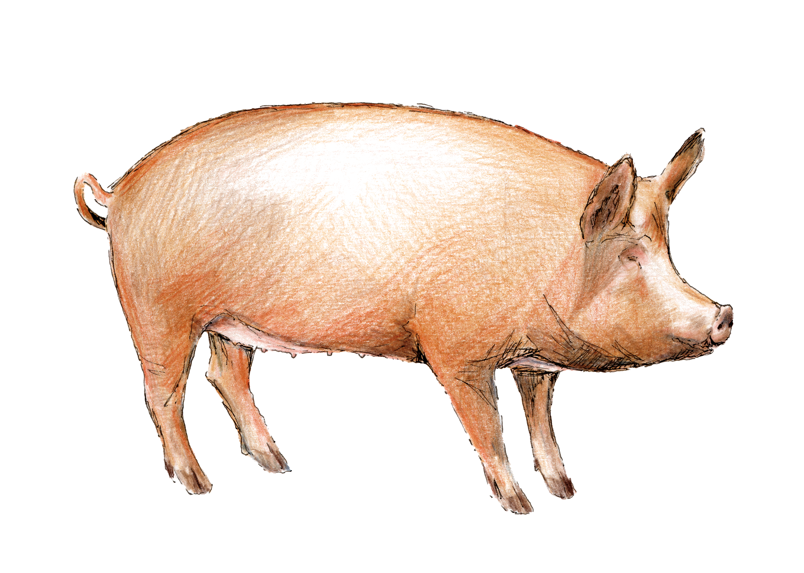

15 mm · under the clamp



Your BNG units are registered. Now they need to sell.
Bring your land into the Biofarm Fold.
Your habitat bank. The strength of Biofarm behind it.
01Your habitat bank,
actively marketed
actively marketed
02Our developer relationships
and commercial expertise
and commercial expertise
03Sales managed from
enquiry to completion
enquiry to completion
04Deal after deal
Turn your investment in nature into revenue.
Talk to us about joining the Fold.
200 mm · inside the roller mechanism